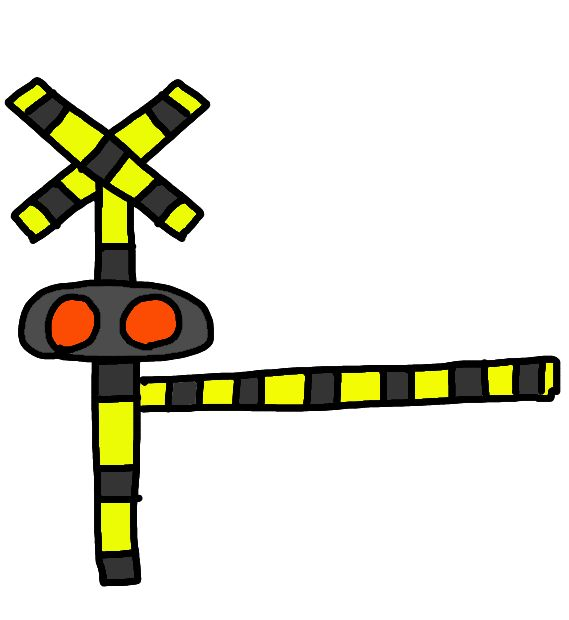
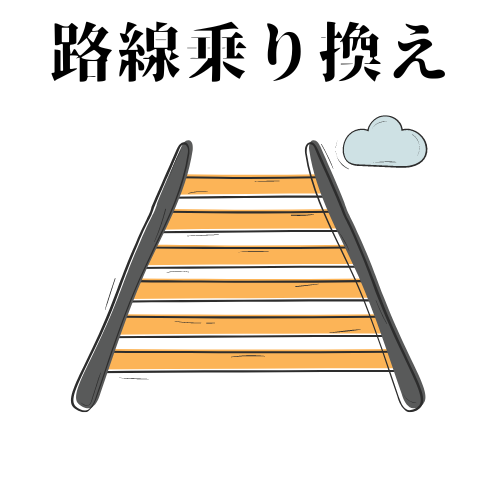
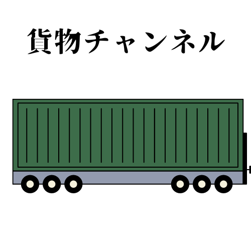
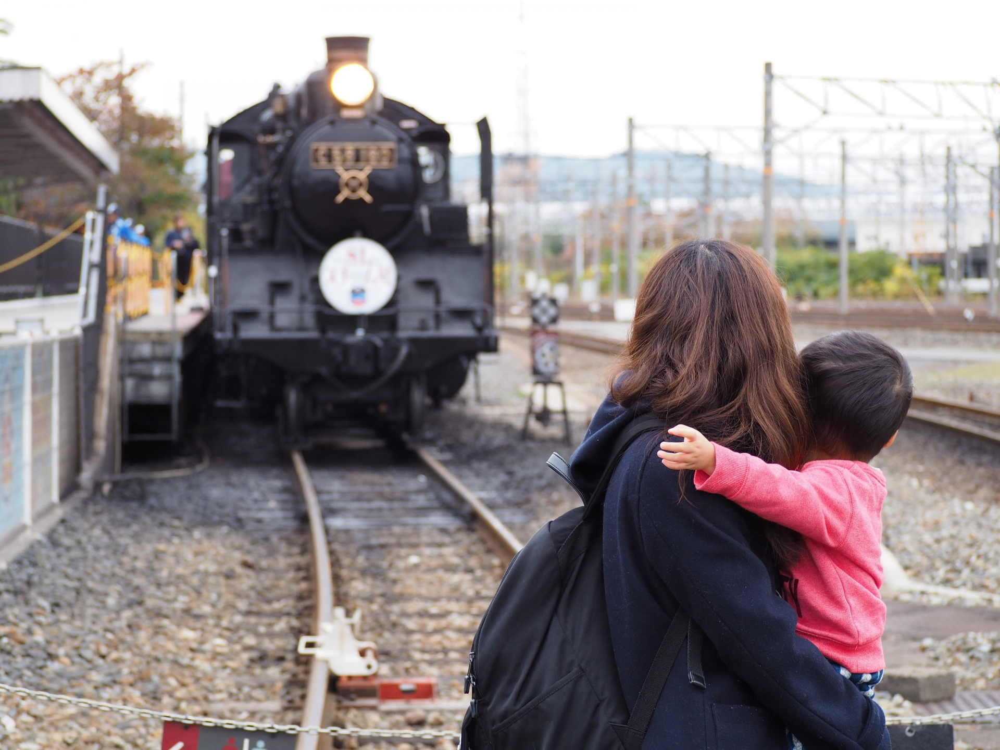
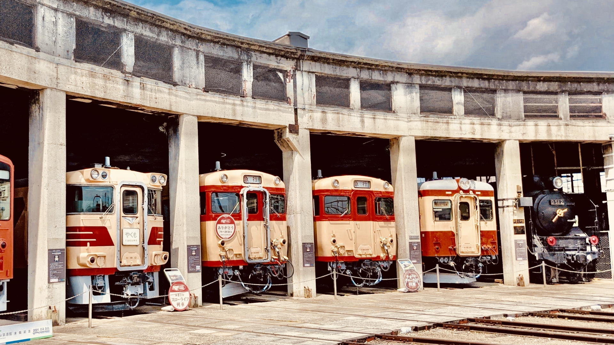
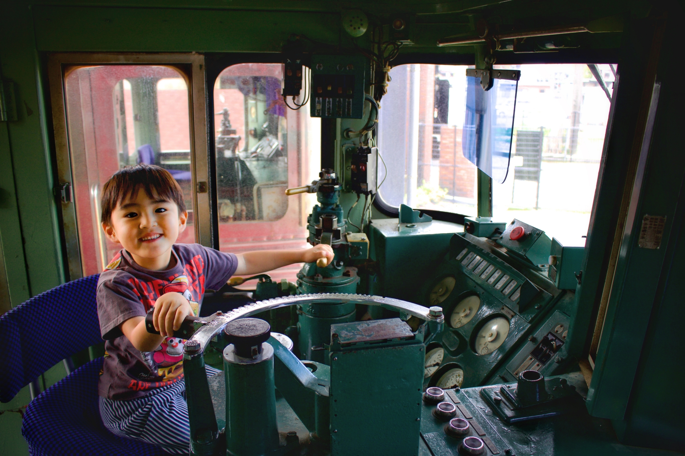
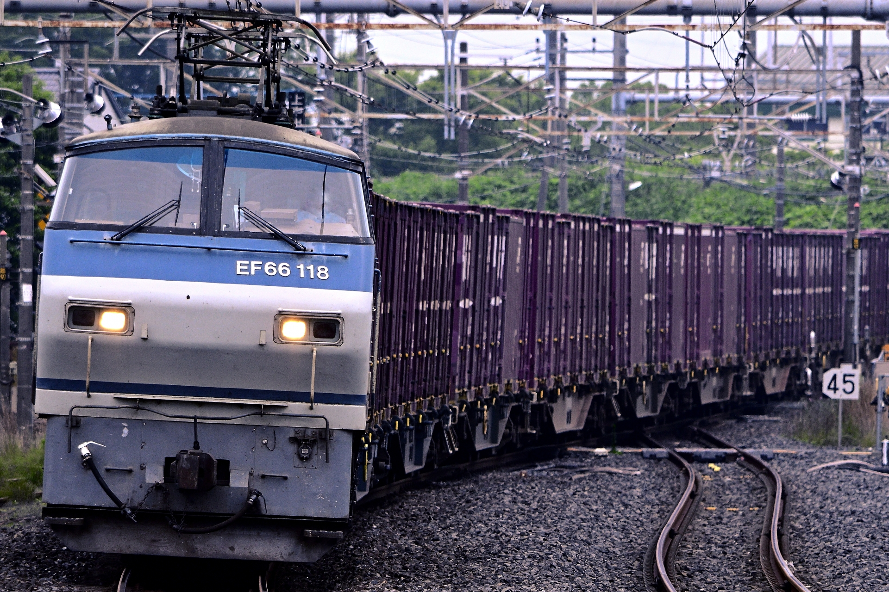
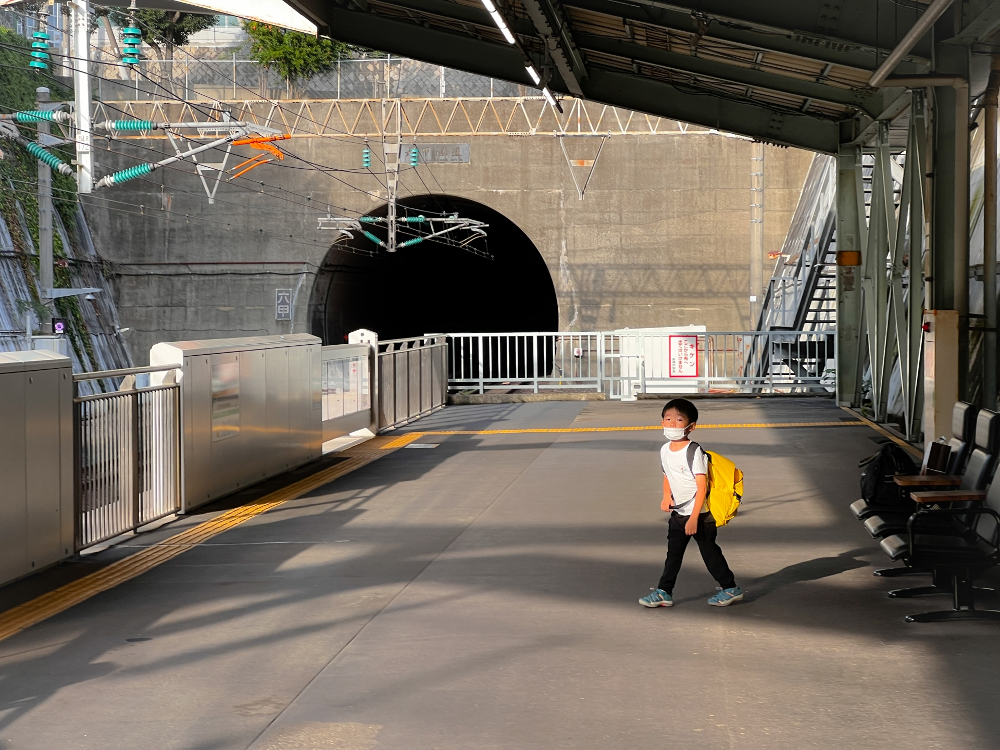

Let's Go For A Museum Tour!
START
小鉄の冒険マップ
三笠鉄道村
新幹線総合車両センター
東武博物館
鉄道博物館
新津鉄道資料館
碓氷峠鉄道文化むら
地下鉄博物館
原鉄道模型博物館
リニア鉄道館
貨物鉄道博物館
長浜鉄道スクエア
京都鉄道博物館
井笠鉄道記念館
九州鉄道記念館
熊本総合車両所
経路表示
From:
To:
walking
driving
訪問記録
地下鉄博物館
東武博物館
鉄道博物館
原鉄道模型博物館
鉄ちゃんアカデミア
最終学歴

旅のしおり


保存
削除
アルバム
    